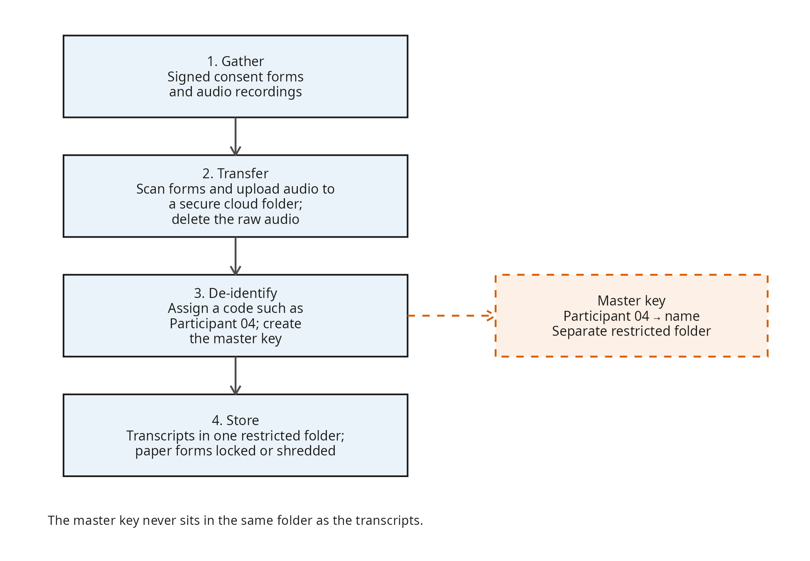
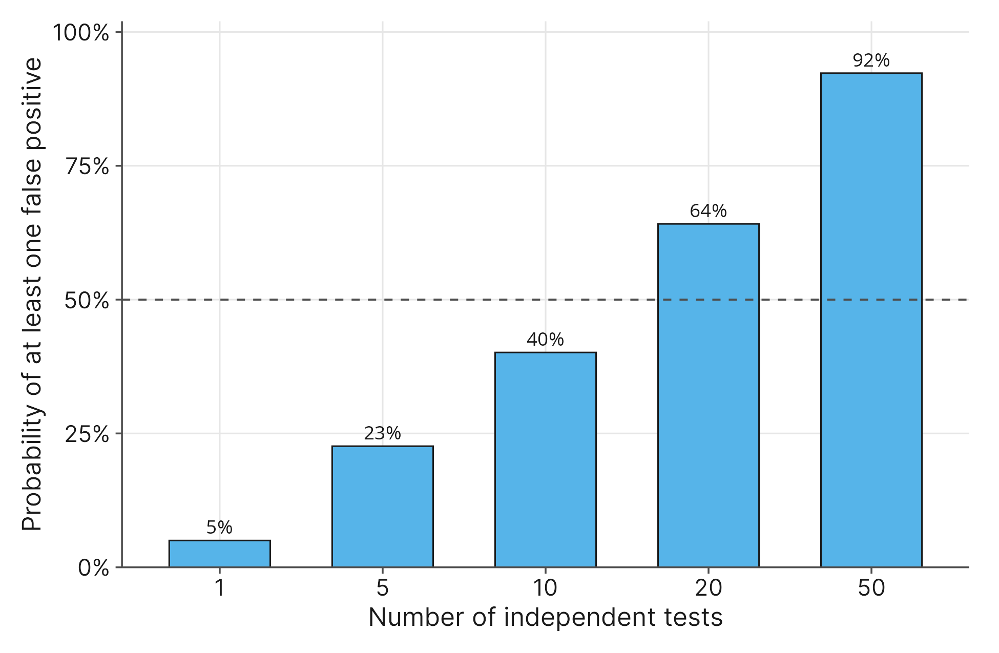

13 Ethics in Statistics and Data Integrity
13.1 Introduction
In 2014, Amazon built an experimental artificial intelligence system to review job applicant resumes (Dastin, 2018). The goal was to automate the hiring pipeline to quickly find the absolute best talent. They fed the algorithm ten years of resumes submitted to the company so the model could learn what a “successful” candidate looked like. However, the company soon realized they had a serious problem. Because the tech industry has historically been male-dominated, the algorithm “learned” that male candidates were mathematically preferable. It actively penalized resumes that included the word “women’s” (such as a “women’s chess club” or “women’s track team”) and systematically downgraded graduates of two all-women’s colleges.
The algorithm was operating exactly as it was mathematically designed to, but it was ethically broken. Amazon ultimately scrapped the project when they realized the bias could not be entirely programmed out of the system. The fallout from this case highlighted a terrifying reality: algorithms inherit the historical biases of the humans who build them.
Up to this point in our textbook, we have focused entirely on the mechanics of finding answers. You have learned how to structure research, visualize relationships, and run complex tests to measure statistical significance. We have often treated data as an abstract tool to solve puzzles. But in practice, data represents real people and can have a profound impact on their lives.
When a statistical model decides who gets a job interview, who is approved for a mortgage, or how a clinical depression protocol is managed, the math ceases to be an academic exercise. It becomes a mechanism of power. Every time you gather information, build a regression model, or test a hypothesis, you are making decisions about how to represent someone’s reality. If you choose to ignore missing survey responses, are you silencing a vulnerable demographic? If you run an analysis a dozen different ways just to find a statistically significant \(p\)-value, are you pushing a false narrative into the scientific record? A calculated test statistic means absolutely nothing if the data was gathered without consent, stored without privacy, or analyzed with an algorithm that amplifies human bias.
This is why statistical analysis requires a strict ethical infrastructure. Before a single survey is distributed or a measurement taken, there must be a mechanism to protect the human beings who provide the data. Once the data is collected, the analyst must be held accountable for how they handle the truth.
By the end of this chapter, you will understand the critical role of an Institutional Review Board (IRB) in safeguarding human subjects. We will take a behind-the-curtain look at how research protocols are evaluated for risk, equity, and compliance before a study ever begins. You will learn the strict difference between anonymity and confidentiality in data security. Finally, we will examine algorithmic accountability and the ethical dangers of analytical manipulation, exploring how practices like p-hacking, selective reporting, and unjustified one-sided tests betray the integrity of the scientific process.
13.2 The Infrastructure of Ethics
In 2016, a team of researchers scraped the personal profiles of 70,000 users on the dating website OkCupid. They collected usernames, ages, genders, sexual orientations, political beliefs, and intimate answers to thousands of personal survey questions. The researchers then uploaded the entire dataset to an open, public repository for anyone to download and analyze. When confronted by outraged users and ethicists, the lead researcher defended the decision by arguing that the information was already accessible on the internet, so it was fair game for statistical analysis (Resnick, 2016).
This case highlights a catastrophic failure in the ethical handling of information. The researchers confused accessible data with ethical data. They treated personal human experiences as free raw materials to be mined, ignoring the basic responsibilities researchers owe to the people they study. This brings us to the two pillars of responsible research: data governance and data stewardship.
Data governance is the overarching framework of rules, policies, and standards that dictate how data should be collected, stored, and used. You can think of governance as the “law of the land.” In an academic or corporate setting, these rules are established by federal regulations, institutional policies, and legal frameworks that dictate who is allowed to access certain types of information. Governance determines exactly what is permitted and what is forbidden.
Good data governance looks like a clear, institutional blueprint. It means a college or research facility has transparent rules stating exactly who owns the gathered information, how long it must be retained, and what technical security measures (like encrypted servers or restricted network access) are strictly required. It ensures that everyone in the organization understands the legal boundaries of data collection and that a formal response protocol exists to protect subjects if a data breach ever occurs.
Data stewardship, on the other hand, is the active, day-to-day enforcement of those rules. If governance is the law, stewardship is the ethical responsibility of the individual researcher holding the data. A data steward is essentially a caretaker. When participants trust you with their information (especially sensitive details like their academic records, dietary habits, or mental health status), you assume a moral and professional obligation to protect them from harm.
Good data stewardship looks like the everyday, deliberate actions of a responsible researcher. It is the act of meticulously stripping names, birthdates, and identifying details from a spreadsheet before sharing it with a colleague. It is the decision to store sensitive survey responses on a secure, approved network drive rather than downloading them to a personal laptop that could be lost or stolen. Ultimately, a good data steward treats the data with the same respect and care they would offer the human beings it represents.
The OkCupid researchers operated outside of strict data governance, and they failed in their duty of data stewardship. They broke the trust of the individuals who generated the data, causing permanent reputational damage to their field and proving that technical skill does not equal ethical competence.
| Dimension | Data governance | Data stewardship |
|---|---|---|
| What it is | The institutional framework of rules, policies, and standards for collecting, storing, and using data | The researcher’s active, day-to-day enforcement of those rules |
| Who is responsible | Institutions, regulators, and legal frameworks | The individual researcher or data steward who holds the data |
| What it covers | Ownership, access, retention, required security, and breach response | De-identification, secure storage, careful sharing, and breach prevention |
| Example | A university requires encrypted servers and restricted network access | A researcher strips names before sharing a file and stores responses on an approved drive |
| In the OkCupid case | The researchers operated outside institutional rules | They failed to protect the people behind the profiles |
Before we can calculate a single mean or build a regression model, we must establish a strong foundation of governance and stewardship. In the academic and medical communities, the primary mechanism for enforcing this infrastructure is a specialized committee designed specifically to evaluate research risk and protect human subjects.
13.3 The Institutional Review Board
In 2014, researchers published the results of a large experiment conducted on nearly 700,000 Facebook users. Without asking for permission or informing anyone they were part of a study, the company intentionally manipulated users’ news feeds. Some users were shown mostly positive posts, while others were flooded with negative and sad content. The goal was to see if emotions were contagious online. When the paper was published, the academic community and the public were horrified (Meyer, 2014). Because Facebook was operating as a private tech company rather than an academic institution, they had bypassed the strict ethical review processes that universities rely on to protect people.
To prevent these kinds of ethical bypasses, universities, hospitals, and research institutions rely on an Institutional Review Board (IRB). An IRB is a formal, independent committee composed of scientists, non-scientists, and community members. Their primary job is to review, approve, and monitor research plans before a single piece of data is ever collected.
Many student researchers assume the IRB is just a bureaucratic hurdle designed to slow down their timeline. In reality, the board acts as an ethical safety net. When you want to conduct research, you cannot just start handing out surveys. You must first submit a protocol, a comprehensive document detailing exactly what your research question is, who you will recruit, how you will secure their consent, and how you will protect their data. The board evaluates this protocol to ensure the potential benefits of the study justify the methods being used.
When an IRB evaluates a protocol, they are specifically weighing three major concepts:
- Human Subjects: The IRB is only concerned with research involving human subjects. This means the researcher is either interacting directly with living individuals (like conducting an interview or a diet intervention) or analyzing identifiable private information (like reviewing identifiable student academic records). If you are analyzing a public dataset where all identities have been stripped away, like the global economic data from Chapter 4, the IRB generally does not need to intervene.
- Minimal Risk: The board’s job is to protect participants from harm. The baseline they use is called minimal risk, which means the probability and magnitude of harm in the study are no greater than what a person would encounter in their normal, everyday life. An anonymous survey about favorite study habits is minimal risk. A study tracking illegal drug use or a clinical trial for depression medication exceeds minimal risk, requiring the IRB to demand much stricter safety and data stewardship protocols.
- Vulnerable Populations: The foundation of ethical research is voluntary informed consent. However, some groups have a compromised ability to freely say “no.” The IRB strictly protects vulnerable populations, which legally include children, prisoners, pregnant women, and individuals with cognitive impairments. In a college setting, even students can be considered vulnerable if they feel pressured to participate in a professor’s study out of fear that refusing might impact their grades.
A behind-the-curtain look at an IRB reveals that they are not looking to block research; they are looking to calibrate safety. If you submit a protocol for an anonymous, harmless survey, the IRB might quickly issue an “exempt determination,” allowing you to proceed with your work right away. But if your research touches on sensitive topics or vulnerable people, the board will step in to help you redesign your study so that the humans behind the numbers are treated with the respect they deserve.
13.4 Data Security and Privacy
In 2006, the internet provider AOL released a dataset of 20 million internet search queries from 650,000 users to help academic researchers. To protect users, AOL replaced all usernames with random identification numbers. They assumed the data was completely anonymous. However, journalists quickly noticed that user No. 4417749 frequently searched for landscapes in Lilburn, Georgia, along with several people who had the last name Arnold. Within days, they identified the user as a 62-year-old widow and published her identity (Barbaro & Zeller, 2006).
The AOL incident is a textbook failure in data security. Simply deleting a name column does not guarantee privacy. When researchers collect information from human subjects, they are legally and ethically responsible for protecting that privacy. To do this correctly, we must understand the strict difference between two frequently confused terms: anonymity and confidentiality.
Anonymity means that absolutely no one, not even the researcher, can link the data back to the individual who provided it. If a student fills out a paper survey on campus and drops it into a locked box without writing their name, the data is anonymous. If you do not collect names, email addresses, or specific demographic details, there is no way to figure out who provided the answers. Because the data cannot be traced, the risk to the participant is low.
Confidentiality means the researcher can link the data to the participant. However, the researcher legally and ethically promises to keep that identity a secret from the public. For example, recall the diet and depression study from Chapter 3. We tracked the same students over a period of three weeks. We had to know who they were to match their baseline depression scores to their final scores. This data was not anonymous. Instead, it was kept confidential.
| Question | Anonymity | Confidentiality |
|---|---|---|
| Can the researcher link the data to a person? | No | Yes |
| Can anyone outside the research team link it? | No | No, if the safeguards hold |
| What identifying information is collected? | None, including names, emails, and specific demographics | Identifying information is collected but protected |
| Example | An unsigned paper survey dropped into a locked box | A diet and depression study matched by participant code, with the master key stored separately |
| Promise to participants | No one, including the researcher, can identify you | The researcher can identify you but will not disclose your identity |
| Main risk | Re-identification from combined details | A lost key or a data breach |
To understand what good confidentiality looks like in practice, let’s walk through a common research scenario. Imagine you are conducting in-person interviews to study math anxiety among college freshmen. You sit in a room, have them sign a paper consent form, and record their answers on a digital audio recorder.
How do you keep this sensitive information safe? In the past, an Institutional Review Board might have required you to lock the paper forms in a heavy filing cabinet and store the audio files on an “air-gapped” USB drive kept in a safe. However, physical drives are easily lost, stolen, or corrupted. Today, review boards generally prefer that you use an institutionally authenticated cloud provider, such as a secure university Google Drive or Dropbox account. These platforms offer enterprise-level encryption, require strict password authentication, and track exactly who logs in to view the files.
A secure data workflow requires you to actively protect the information at every step:
- Gathering: You collect the signed paper consent forms and record the audio. At this moment, the data is vulnerable because it exists on physical, easily accessible media.
- Transferring: As soon as the interview ends, you scan the paper forms and upload the audio files directly to your secure cloud folder. You immediately delete the raw audio from the portable recorder so it cannot be found if you drop the device on your way home.
- De-identification: You type out the interview transcripts. Instead of using the student’s name, you de-identify the data by assigning them a random code (e.g., “Participant 04”). You create a separate “master key” document that links “Participant 04” to the student’s real name.
- Storage: You store this master key in a different, restricted cloud folder from the transcripts. Finally, you lock the original paper consent forms in a secure campus office, or securely shred them if your institutional policy allows for digital-only records.

Conflating anonymity and confidentiality is a dangerous ethical mistake. If you promise participants anonymity but collect their email addresses to send a follow-up survey, you have violated their trust. True data security requires knowing exactly what kind of privacy you are promising and building the strict technical walls needed to enforce it.
13.5 Algorithmic Accountability
In 2016, the investigative journalism organization ProPublica analyzed a widely used risk assessment algorithm called COMPAS. Judges across the United States used this software to predict the likelihood that a criminal defendant would re-offend. The program assigned each defendant a risk score from 1 to 10. ProPublica evaluated the scores of over 10,000 defendants in Florida. They then tracked what actually happened to these individuals over the next two years.
The journalists discovered a large racial disparity. The algorithm falsely flagged Black defendants as future criminals at almost twice the rate of white defendants. Simultaneously, it frequently mislabeled white defendants as low risk even when they later committed new crimes (Angwin et al., 2016).
This case is a stark example of a failure in algorithmic accountability. Computer programs frequently make high-stakes decisions. They predict criminal recidivism, score credit applications, and decide who gets a job interview. When they do, we need a mechanism to hold both the algorithm and its creators accountable for the outcomes.
Bias in Algorithms
Many people mistakenly believe that because a computer relies on math, its decisions are perfectly objective. However, algorithms do not fall from the sky. They are built by humans and trained on historical data. If that data comes from a system that historically over-policed minority neighborhoods, the algorithm learns that bias. It will mathematically “prove” that minority defendants are a higher risk purely because they historically faced higher arrest rates.
As a researcher, you cannot hide behind the defense that “the computer did it.” If you build a regression model that inadvertently discriminates against a specific group, the mathematical accuracy of your model is irrelevant. The ethical failure is entirely yours.
The Promotion of Transparency
The only way to achieve algorithmic accountability is through absolute transparency. In the case of the COMPAS algorithm, the software was proprietary. The company that built it considered the exact mathematical formulas to be a corporate trade secret. When the software produced biased results, the public and the judges using the scores were not allowed to look under the hood to see how the math worked.
In modern statistical research, secret algorithms are an ethical red flag. Good researchers promote transparency by openly publishing their methodologies. They share their statistical models and the exact analytical steps they used to reach their conclusions. They invite outside experts to audit their work to check for biases or errors. If you cannot explain exactly how your model reached a conclusion, or if you refuse to let others verify your work, you have broken the fundamental trust required in science.
13.6 The Ethics of Omission
In the early months of the COVID-19 pandemic in 2020, the Centers for Disease Control and Prevention (CDC) published surveillance data to track the spread of the virus. However, public health researchers soon noticed a serious problem: nearly half of the confirmed case reports were missing demographic information about race and ethnicity. Because early analyses simply omitted any patient with incomplete data, the official reports drastically underestimated the severity of the outbreak in Black and Hispanic communities (Labgold et al., 2021). The missing data was not just a clerical error; it actively hid a public health crisis and delayed targeted medical interventions.
This brings us to the ethics of omission. When you gather real data, it is rarely perfectly clean. Participants skip survey questions, drop out of studies, or refuse to answer sensitive questions. The process of cleaning up this messy dataset before analysis is called data triage. Triage forces you to make decisions about what information to keep and what to throw away. Because you are deciding whose voice gets included and whose gets silenced, those decisions carry profound ethical weight.
The most common way beginners handle missing responses is through listwise deletion. This means that if a participant leaves even one question blank on a survey, you delete their entire row from your dataset. It feels like a safe, mathematical way to clean your data. However, what if the missing data is not random? What if low-income students are systematically skipping a survey question about their family’s total wealth? If you use listwise deletion, you will inadvertently erase an entire demographic from your study. Your final analysis will look mathematically perfect, but it will be biased because you threw away the very people who needed to be counted.
Instead of just throwing incomplete records away, ethical researchers explore safer ways to handle missing data. One advanced technique is imputation. Imputation uses statistical models to estimate what the missing value likely would have been, based on the participant’s answers to other related questions. While we will not calculate imputations in this textbook, you should understand the concept: replacing a missing value with a carefully calculated estimate is often much more ethical than completely deleting a human being’s experience from the scientific record.
13.7 Analytic Integrity and p-Hacking
In 2018, a prominent food researcher at Cornell University, famous for studies showing how plate size affects appetite, resigned after an investigation into his research practices. Leaked emails revealed that when a study’s initial results failed to show statistical significance, the researcher instructed his lab to “deep dive” into the data. He told them to break the participants into smaller groups (men versus women, lunch versus dinner, or specific age brackets) and run tests until they found a result that was mathematically significant. This practice ultimately led to the retraction of over 50 published scientific papers (Resnick, & Belluz, 2018).
This is a classic example of a failure in analytic integrity. Once your data is collected and safely stored, you must analyze it honestly. Modern statistical software makes it easy to run hundreds of tests in a matter of seconds. When a researcher abuses this power to hunt for a “successful” result, they are engaging in p-hacking. P-hacking is the unethical practice of manipulating your analysis until you artificially push a \(p\)-value below the 0.05 significance level.
P-hacking rarely involves inventing fake data. Instead, it relies on deceptive analytical mechanics:
- Unjustified One-Sided Tests: In this textbook, we have established that a rigorous alternative hypothesis (\(H_1\)) always uses the does not equal symbol (\(\neq\)). This two-sided test is the strict default in ethical research. However, a one-sided test will mathematically cut your \(p\)-value in half. If a researcher runs a two-sided test and gets a non-significant \(p\)-value of 0.08, they might secretly switch to a one-sided test to drop the \(p\)-value to a “significant” 0.04. Unless this was explicitly planned before the study began, this is analytical cheating.
- Selective Group Analysis: This is exactly what the Cornell lab did. If a diet intervention shows no overall effect, a p-hacker will divide the data into smaller and smaller subgroups. They might test just the men, then just the women, then just women who eat out frequently. Eventually, random noise in the data will produce a statistically significant result. Reporting that isolated finding while hiding all the failed tests creates a false narrative.
- Failing to Adjust for Multiple Comparisons: Our standard significance level (\(\alpha\)) is 0.05, meaning we accept a 5% chance of making a Type I error (a false positive). But if you test 20 different relationships in a single dataset, math dictates that at least one test will likely trigger a false positive by pure chance. Ethical researchers use mathematical adjustments to lower their significance level when running multiple tests. P-hackers ignore this rule and publish the random noise as a major discovery.
- Equating Sample Size with Practical Effect: Remember that a \(p\)-value only measures the strength of evidence, not the size of the effect. If you have a huge sample size of 500,000 people, even a microscopic difference (like a diet plan that causes someone to lose two ounces over a year) might generate a highly significant \(p\)-value of 0.001. A researcher lacking integrity will weaponize that huge sample size to “find” non-existent practical effects, intentionally confusing statistical significance with practical impact.

Ultimately, analytic integrity requires discipline. You must decide exactly what you are going to test before you look at the data, and you must honestly report the results you find, even if those results are boring.
13.8 Common Mistakes / Misconceptions
As you conduct your first real research projects or critically evaluate other researchers’ work, keep these misconceptions in mind:
- “The review board is an adversary trying to block my research.” New researchers often view the ethics review process as a bureaucratic hurdle or a policing body looking for reasons to reject their work. The reality is that review boards are collaborative. Their goal is to help researchers redesign their methods to ensure human subjects are safe so the study can proceed ethically. The board is there to calibrate safety, often issuing rapid exempt determinations for harmless, anonymous surveys so you can get to work quickly, while reserving strict oversight for protocols that involve vulnerable populations or exceed minimal risk.
- “If I delete the names, the data is completely anonymous.” Never confuse de-identification with true anonymity. Don’t assume that if you strip names from a dataset but keep email addresses, zip codes, or IP addresses, the subjects are anonymous. In reality, this data is merely confidential. If you or anyone else can theoretically trace the information back to the individual (even if it requires a separate master key), the data is not anonymous, and you must treat it with a much higher level of security.
- “Math is objective, so algorithms cannot be biased.” Beginners often assume that because computers run on numbers, they are immune to prejudice. It is a common mistake to trust an algorithm implicitly without questioning its training data. An algorithm does not invent its own morality; it will efficiently scale whatever human biases were present in the historical data it was fed. Treating an algorithm’s output as unquestionable truth is an ethical failure.
- “Research ethics only matters if you are completely faking the data.” When people think of scientific misconduct, they usually imagine researchers fabricating spreadsheets out of thin air. They often do not realize that deceptive analytical mechanics are just as damaging to the scientific record. Quietly dropping “messy” participants from the dataset through listwise deletion, hiding failed tests, or running a dozen analyses until a \(p\)-value dips below 0.05 are severe ethical violations. Integrity means reporting the truth of the data, even when the results are boring.
13.9 Key Concepts
- Data Governance and Stewardship: Data governance is the institutional framework of rules dictating how data is collected and stored, while data stewardship is the individual researcher’s active, ethical responsibility to protect that data and the people it represents.
- The Institutional Review Board (IRB): An IRB is an independent committee that evaluates research protocols before a study begins. Their primary goal is to protect human subjects, ensure the study does not exceed minimal risk, and safeguard vulnerable populations who may not be able to freely give consent.
- Anonymity vs. Confidentiality: Anonymity means absolutely no one can link the data back to the participant. Confidentiality means the researcher can identify the participant but uses strict security measures to keep that identity a secret from the public.
- Algorithmic Accountability: Algorithms are not perfectly objective; they inherit the historical biases present in their training data. Ethical researchers promote transparency so that models can be openly audited for bias.
- The Ethics of Omission: Cleaning a dataset requires careful data triage. Using listwise deletion to throw away incomplete records can severely bias your results by silencing specific demographics. Advanced techniques like imputation offer more ethical ways to handle missing responses.
- Analytic Integrity and P-Hacking: P-hacking is the unethical practice of manipulating your analysis to artificially push a \(p\)-value below the 0.05 significance level. This includes using unjustified one-sided tests, selectively analyzing subgroups, failing to adjust for multiple comparisons, and weaponizing large sample sizes to claim non-existent practical effects.
13.10 References
Angwin, J., Larson, J., Mattu, S., & Kirchner, L. (2016, May 23). Machine bias. ProPublica. https://www.propublica.org/article/machine-bias-risk-assessments-in-criminal-sentencing
Barbaro, M., & Zeller, T. (2006, August 9). A face is exposed for AOL searcher No. 4417749. The New York Times. https://www.nytimes.com/2006/08/09/technology/09aol.html
Dastin, J. (2018, October 10). Amazon scraps secret AI recruiting tool that showed bias against women. Reuters. https://www.reuters.com/article/us-amazon-com-jobs-automation-insight/amazon-scraps-secret-ai-recruiting-tool-that-showed-bias-against-women-idUSKCN1MK08G
Labgold, K., Hamid, S., Shah, S., Gandhi, N. R., Chamberlain, A., Khan, F., Khan, S., Smith, S., Williams, S., Lash, T. L., & Lash, L. J. (2021). Estimating the unknown: Greater racial and ethnic disparities in COVID-19 burden after accounting for missing race and ethnicity data. Epidemiology, 32(2), 157–161. https://doi.org/10.1097/EDE.0000000000001314
Meyer, R. (2014, June 28). Everything we know about Facebook’s secret mood manipulation experiment. The Atlantic. https://www.theatlantic.com/technology/archive/2014/06/everything-we-know-about-facebooks-secret-mood-manipulation-experiment/373648/
Resnick, B. (2016, May 12). Researchers just released profile data on 70,000 OkCupid users without permission. Vox. https://www.vox.com/2016/5/12/11666116/70000-okcupid
Resnick, B., & Belluz, J. (2018, September 20). A top Cornell food researcher has had 15 studies retracted. That’s a lot. Vox. https://www.vox.com/science-and-health/2018/9/19/17879102/brian-wansink-cornell-food-brand-lab-retractions-jama
13.11 Exercises
13.11.1 Section A: Vocabulary and Concept Application
These questions test your understanding of the core ethical frameworks and definitions introduced in this chapter.
- Explain the difference between data governance and data stewardship using a hypothetical example of a university research lab.
- A researcher promises participants anonymity on a survey but asks them to provide their student ID numbers so she can track their academic progress over four years. Explain why this is a violation of anonymity and state what privacy term the researcher should have used.
- Define “minimal risk” in your own words. Give an example of a study that would be considered minimal risk, and an example of a study that would exceed minimal risk.
- Why is listwise deletion potentially unethical if the missing data is not missing randomly? What is the conceptual alternative to simply deleting incomplete records?
13.11.2 Section B: Spot the Violation
Read the following research scenarios. Identify the specific ethical or analytical violation occurring in each situation.
- A researcher studying diet and energy levels runs an independent \(t\)-test comparing men and women and finds a \(p\)-value of 0.08. He then decides to analyze only women under 30, and finds a \(p\)-value of 0.04. He publishes the second finding without mentioning the first. What specific analytical violation has he committed?
- A hospital uses a machine learning algorithm to predict which patients will require intensive care. The algorithm was trained exclusively on data from the 1990s, when the hospital served a primarily wealthy, fully insured demographic. What is the ethical danger of deploying this algorithm on today’s general population?
- A professor requires her introductory psychology students to participate in her clinical trial for a new anxiety medication, stating that anyone who refuses will automatically fail the course. Which specific Institutional Review Board guideline is the professor violating?
- A researcher collects data on college binge drinking. She stores the spreadsheet containing the students’ names, dorm rooms, and drinking habits on her personal laptop and frequently works on the data at a public coffee shop. Is this a failure of data governance or data stewardship? Explain your reasoning.
- A researcher studying a new weight-loss pill uses a sample size of 400,000 participants. The test returns a \(p\)-value of 0.001. However, the average weight loss was only 0.1 pounds over six months. Explain how the researcher might weaponize this \(p\)-value to mislead the public.
13.11.3 Section C: IRB Protocol Review
For these questions, imagine you sit on a university Institutional Review Board. Read the brief protocol and identify the primary ethical concern (e.g., vulnerable populations, exceeding minimal risk, data security, or lack of consent).
- Protocol 1: A researcher wants to study the reading habits of inmates at a state prison. To boost participation, they plan to offer the inmates a reduction in their sentence if they complete the study.
- Protocol 2: A student wants to observe how people react to uncomfortable situations by standing uncomfortably close to strangers in a public park and secretly recording their reactions and faces on a smartphone to post in a public research repository.
- Protocol 3: A researcher wants to interview pregnant women about their prenatal care. They plan to publish the full transcripts of the interviews online with the women’s names attached so the public can read their unedited stories.
- Protocol 4: An economics professor wants to study the relationship between cumulative GPA and future income. They plan to use their faculty access to download the full academic transcripts of all 5,000 current students without asking the students’ permission.